展示资产
使用已确认 V8 的彩色广告派生资产，源 GLB、UV 与颜色图保持不变。此版本仍为绳状扣袢，最近的扁平 PU、四合扣与裁片研究另行保留。
星场、菱形星座与真实鞋面粒子相接，进入可自由观察的 Nightfall。这里记录独立展示页面的实际画面、操作过程和当前边界。
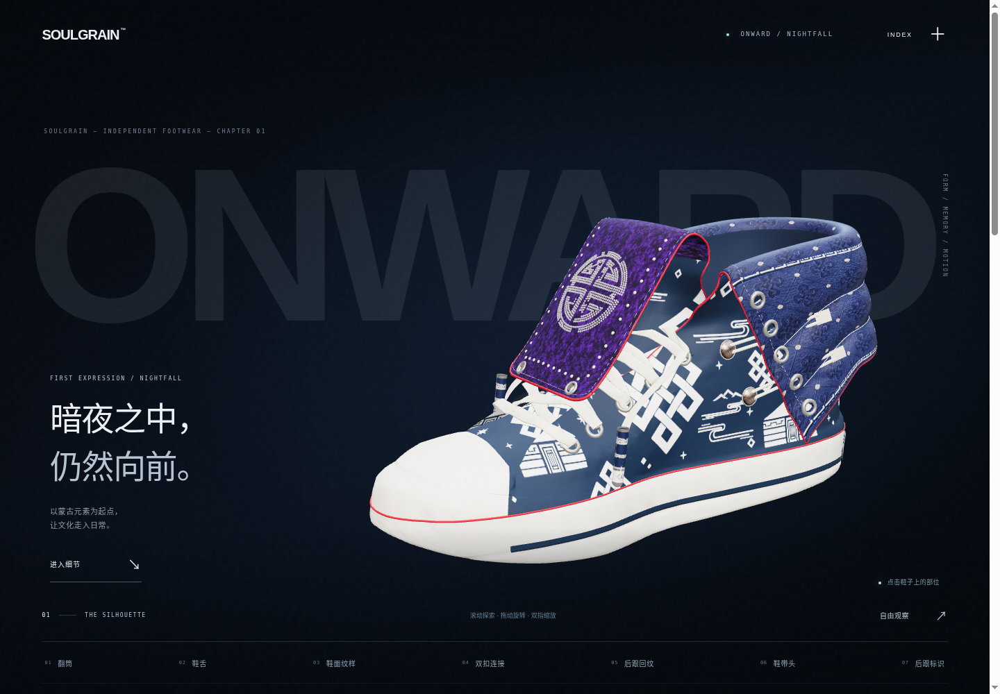
粒子显现 → 材质特写 → 翻筒展开 → 回到整鞋
视频由真实 WebGL 页面逐帧采样编码，用于审核镜头与变形的连续性。编码帧率不代表设备实时性能；核心体验仍是可旋转、缩放和点击的实时三维模型。
原有几何、图案与材质在同一空间内观察。
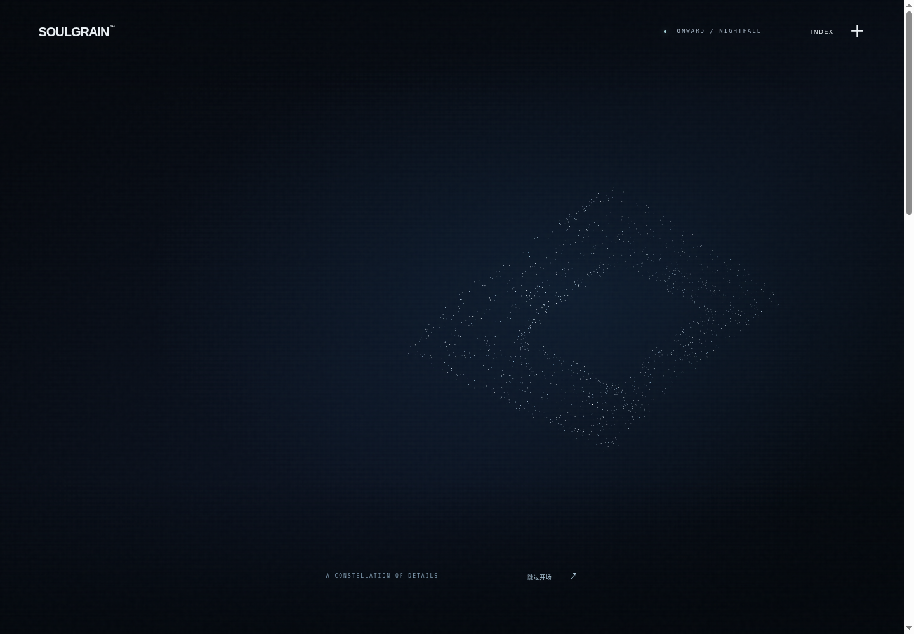
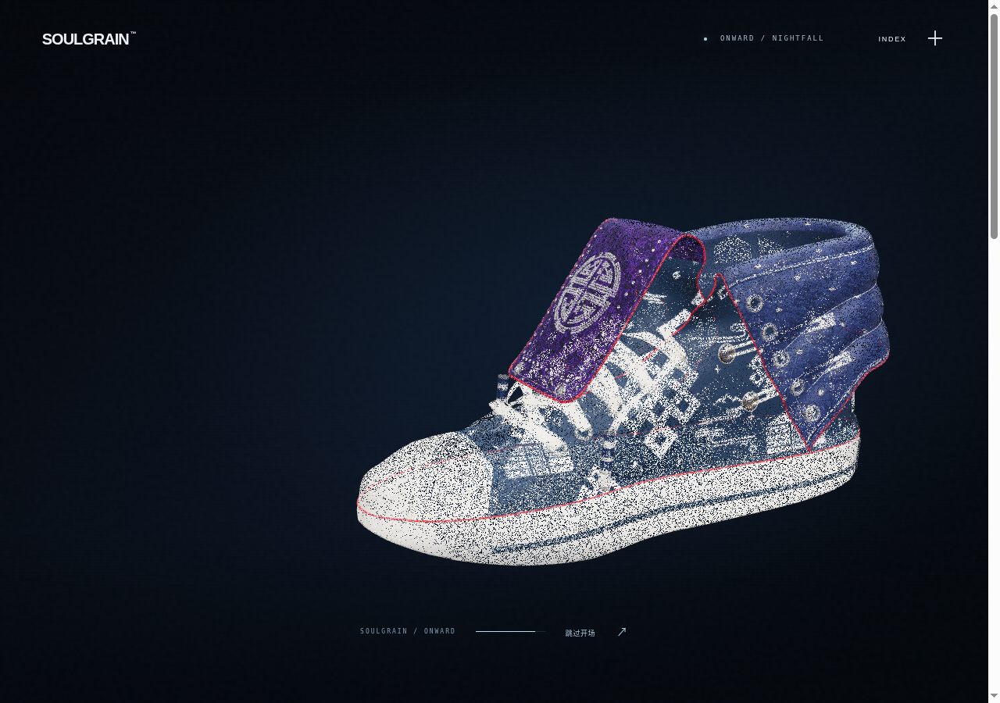
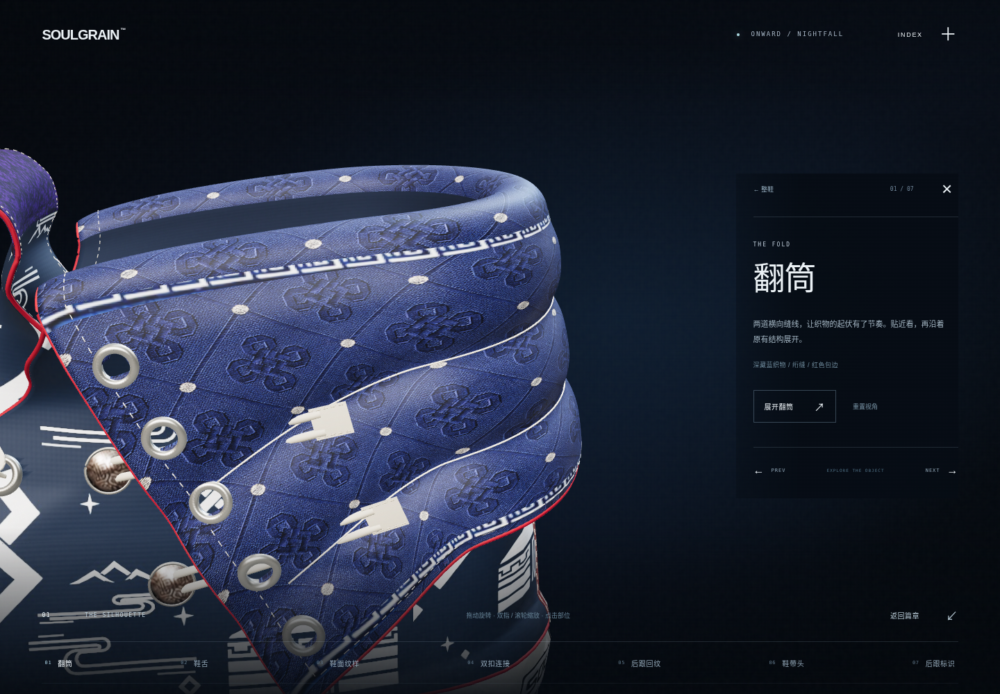
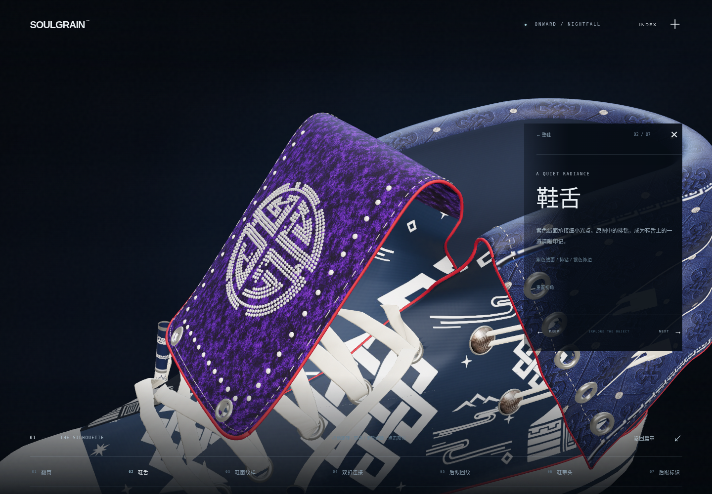
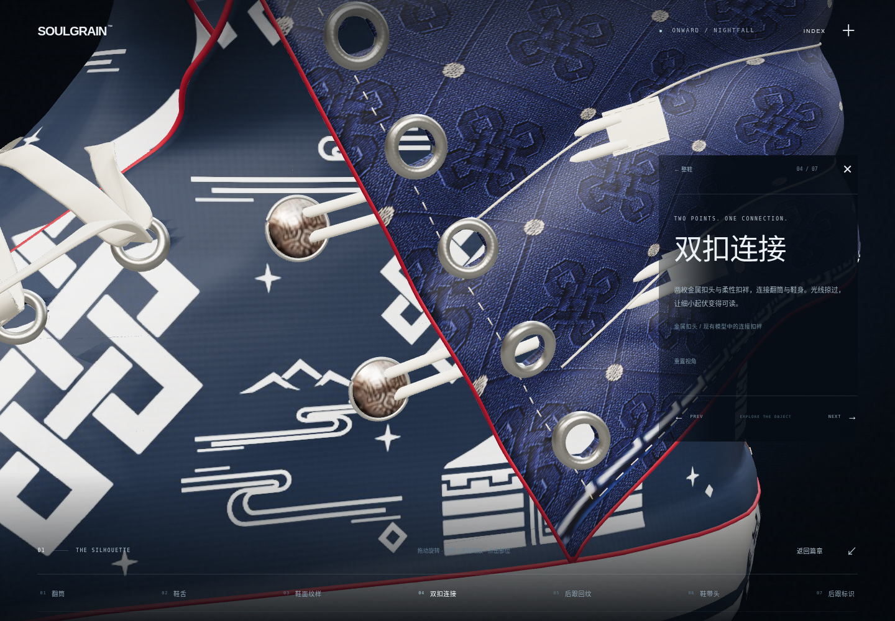
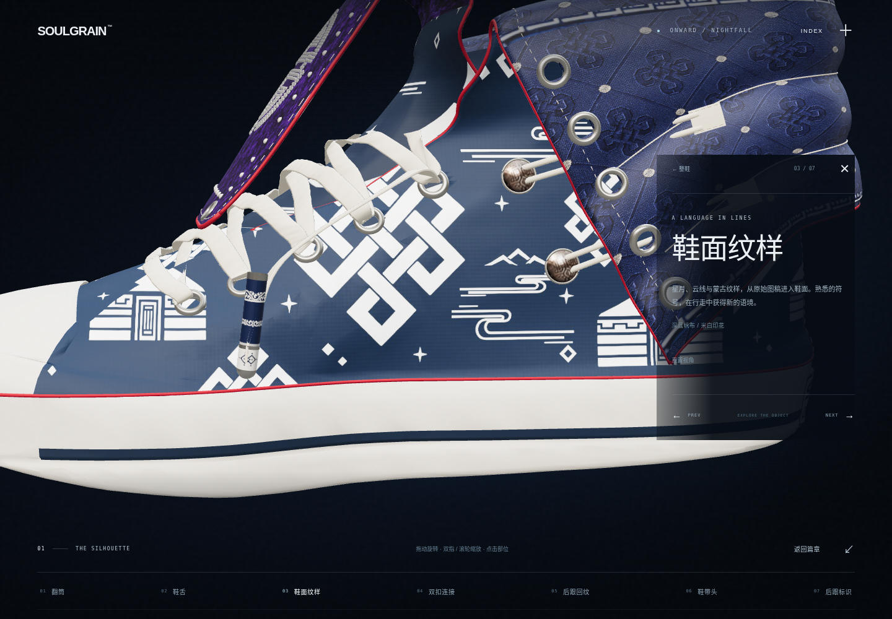
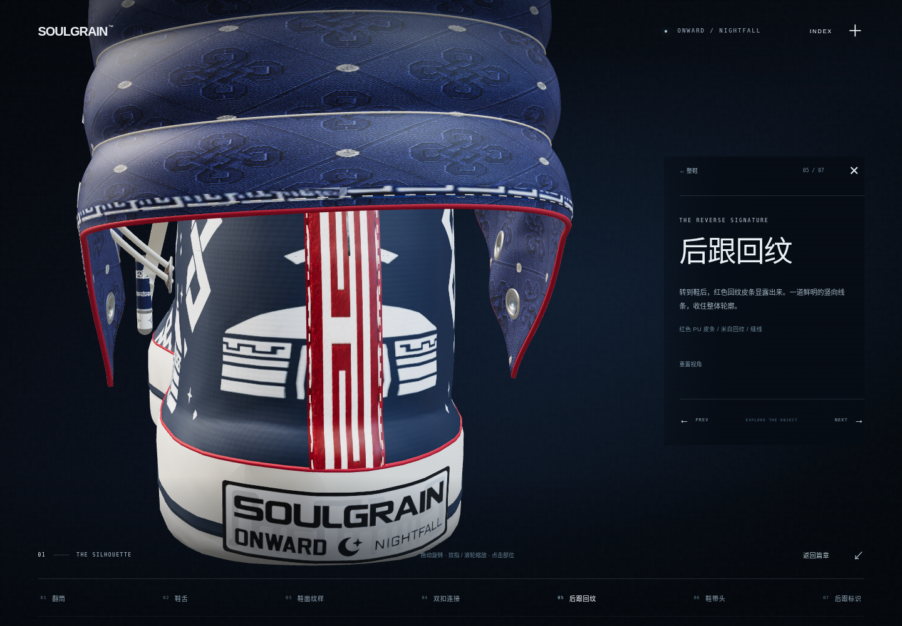
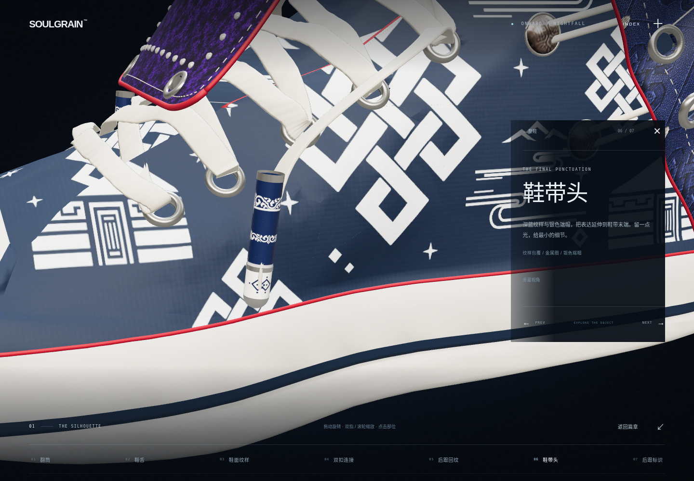
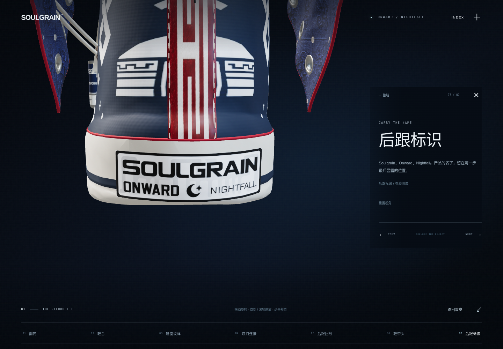
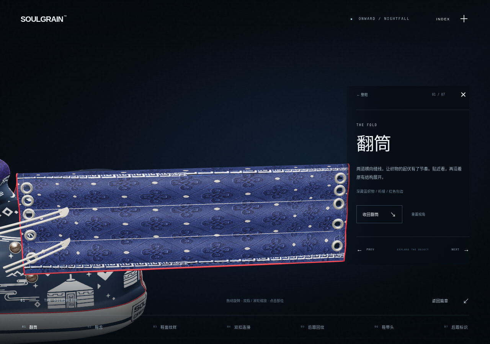
Chromium 视口与触控模拟；尚非 iPad Safari 实机测试。
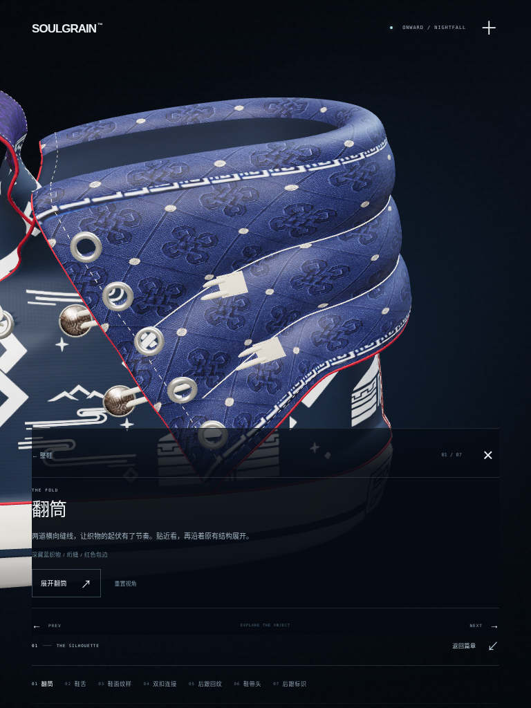
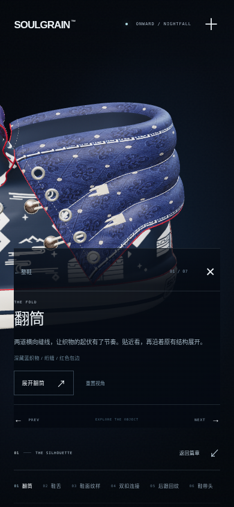
使用已确认 V8 的彩色广告派生资产，源 GLB、UV 与颜色图保持不变。此版本仍为绳状扣袢，最近的扁平 PU、四合扣与裁片研究另行保留。
八个 Awwwards 参考地址均在代理连接阶段被 403 阻断，未取得原站画面及可核实技术栈。本轮依据用户参考描述与项目现有资产原创实现。
浏览器验证环境为 Linux Chromium / SwiftShader 与触控模拟，尚未进行 iPad Safari 实机测试。原贴图分辨率与模型细节仍限制极近距离观察。
七个真实部位、连续镜头、自由旋转缩放，以及受支持的翻筒展开。三档画质与减少动态设置均保留主要交互；未虚构 Daytime 配色或未支持的部件拆解。
首次需载入约 24 MB 模型。质量预算、目标调度和逐帧视频均不是设备流畅度保证。
源码、原始资产来源和验证证据可追溯。